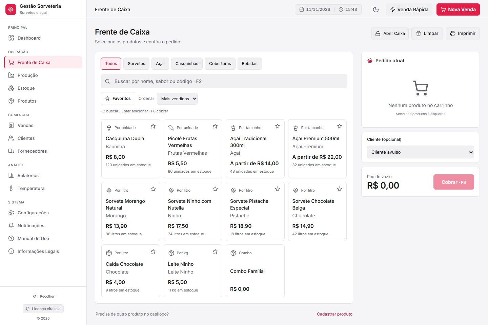

No balcão
Cada pedido do seu jeito: por peso, copo ou complemento.
Atenda filas com busca instantânea, filtros por categoria e montagem clara do pedido do cliente até o recebimento.
- Venda por peso (preço por 100 g para sorvete de massa) ou por litro
- Copos de açaí por tamanho (300 ml, 500 ml) com baixa proporcional no estoque
- Seletor de favoritos e atalhos F2 buscar, Enter adicionar e F8 cobrar
- Cobrança em dinheiro com troco, PIX, débito, crédito e pontos de fidelidade
Experimente pedidos com produtos fictícios.